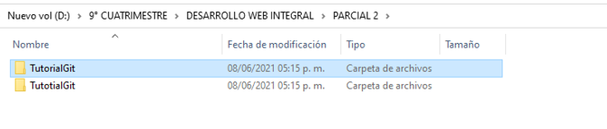
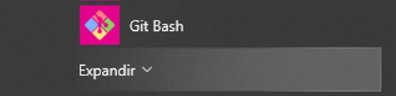
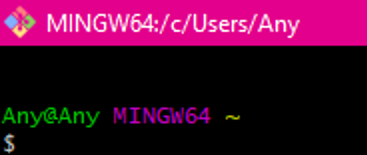
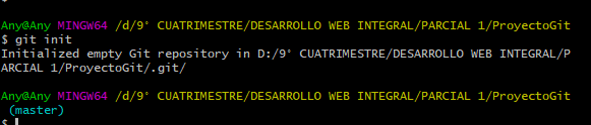
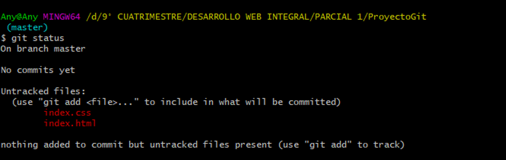
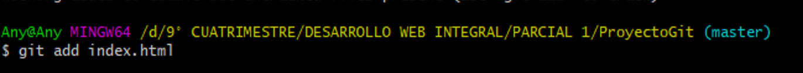
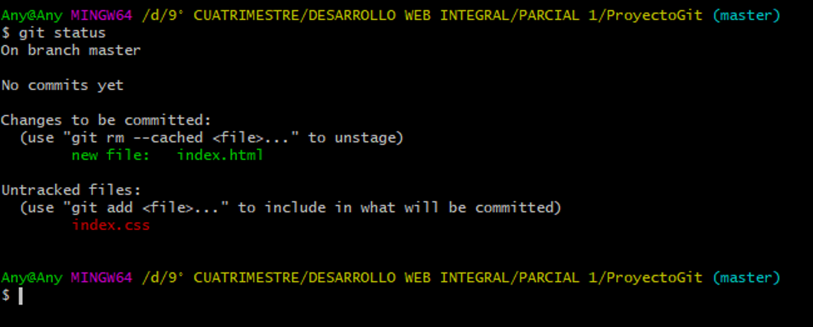
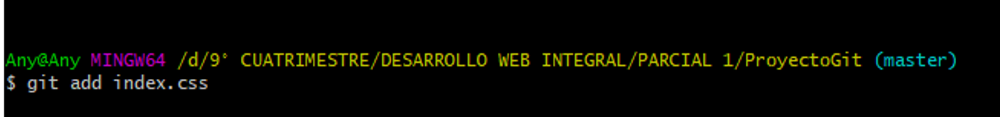
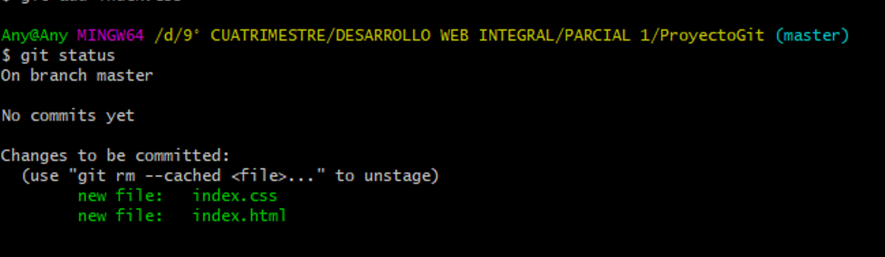
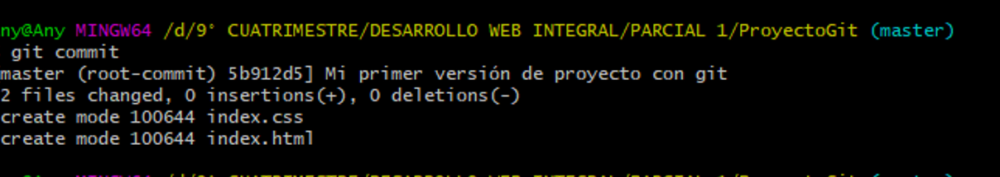

Primer paso a realizar es, crear una carpeta para guardar el proyecto

Después se abre la terminal de Git Bash para poder utilizar ambos comandos(Windows y Linux)

Se abre la terminal de Git Bash para comenzar a colocar los comandos

Se abre la terminal de Git Bash para comenzar a colocar los comandos

Después se coloca el comando git status para poder ver los proyectos, pero se observa que, aún no están agregados.

Después se coloca el comando git add para poder agregar el archivo index.html

Después se coloca el comando git status para poder ver los proyectos,
se observa que index.html ya esta agregado ya se pueden controlar sus cambios u movimientos.

Después se coloca el comando git add para poder agregar el archivo index.css

Después se coloca el comando git status para poder ver los proyectos,
se observa que index.html e index.css ya estan agregados, ya se pueden controlar sus cambios u movimientos.

Después se coloca el comando git config --global user.email seguido de un correo electrónico

Después se coloca el comando git config --global user.neame seguido de un nombre de usuario

Después se coloca el comando git commit para tener la imagen de la primera versión del proyecto, se abre el editor bin y agregamos un mensaje.

Después se coloca el comando git status para poder ver los proyectos,
se observa que index.html ya esta agregado ya se pueden controlar sus cambios u movimientos.